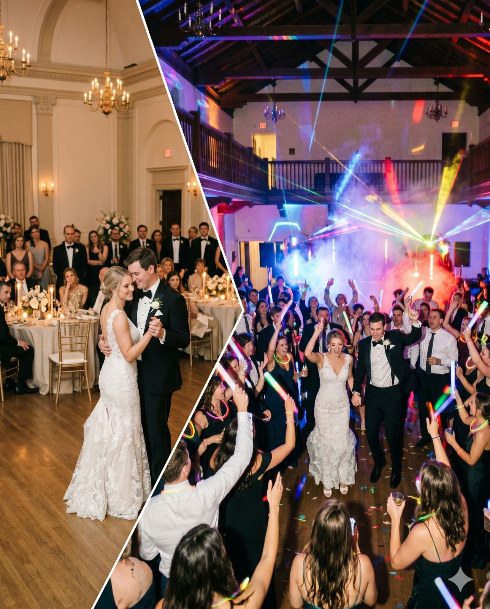

Barra libre
Desde 1.500 €
Cinco horas de fiesta sin bajones, con luces de discoteca, coordinadora y Hora Loca.
Reservar con Barra libreLlevamos el show a bodas en la provincia de Toledo, con especial presencia en La Mancha toledana: Quintanar de la Orden, Madridejos, Consuegra, Villacañas, Mora, Ocaña y la propia ciudad de Toledo.
Solo una boda al día · Respuesta en menos de 24 h

Fincas con encanto, cigarrales y salones: nos adaptamos al espacio con sonido profesional, iluminación robótica y una Hora Loca con fuego frío, humo y confeti.
Hemos trabajado en Finca Las Nieves (Nambroca), en una finca privada de Recas y en una pista privada de Miguel Esteban. Montamos en cigarrales, fincas y salones de toda la provincia: Toledo capital, Nambroca, Recas, Illescas, Talavera de la Reina, Quintanar de la Orden y Consuegra.
Pedroja pincha en directo y lee la pista en tiempo real, y nuestra coordinadora organiza con la finca los momentos clave: entrada, tarta, ramos y Hora Loca. Tenéis un equipo dedicado solo a vuestra boda ese día.
¿Tu pueblo no aparece? Escríbenos y lo vemos.
Desde 1.500 €
Cinco horas de fiesta sin bajones, con luces de discoteca, coordinadora y Hora Loca.
Reservar con Barra libreDesde 2.000 €
Todo el día con un solo equipo: ceremonia, cóctel, banquete y barra libre, con micrófonos y coordinadora.
Reservar con Boda completaPara parejas que quieren todo perfecto, sin coordinar a varios proveedores
Reseñas reales de parejas que se casaron con nosotros. Copiadas tal cual de Bodas.net.
Desde el principio al contactar con ellos ya nos dieron buenas vibras. Todo salió perfecto, nos ayudaron con todo lo posible. Nos hizo la canción para entrar al banquete que no pudo ser más estupenda. Y la barra libre salió todo el mundo contento con la música. Nos sorprendieron haciendo juegos de limbo y con la botella de chupitos que no pudo estar mejor. A nosotros no nos hacía gracia la hora loca pero fue genial y nos lo pasamos de maravilla. Una maravilla de pareja.
Son muy profesionales, nos ayudaron a sacar la alegría a nuestro día más importante, no nos tuvimos que preocupar por nada porque lo organizaron todo ellos. Os hemos recomendado para todas las fiestas, el presupuesto es flexible y buscas alternativas
Sí. Trabajamos en Toledo capital y en toda la provincia, especialmente en Quintanar de la Orden, La Puebla de Almoradiel, Villa de Don Fadrique, Madridejos.
Entre otros: Quintanar de la Orden, La Puebla de Almoradiel, Villa de Don Fadrique, Madridejos, Villacañas, Consuegra, Urda, Lillo, Corral de Almaguer, Tembleque, Mora, Los Yébenes, Ocaña, Sonseca, Toledo.
El paquete Barra Libre incluye 5 horas de fiesta. Si queréis más, se puede ampliar con horas extra.
Una sola. Bloqueamos vuestra fecha en exclusiva.
Sí. Todo el sonido, la iluminación y los efectos son nuestros. No subcontratamos.
Rellenad el formulario de esta página, llamad al 651 306 185 o escribidnos por WhatsApp. Respondemos en menos de 24 horas.
Bloquead vuestra fecha antes de que quede ocupada. Respondemos en menos de 24 horas.
Teléfono651 306 185 WhatsAppEscríbenos ahora Emailhola@doblebeatshow.es Instagram@doblebeatshowHorario de atención: lunes a viernes, de 10:00 a 14:00 y de 16:00 a 20:00.
“Llevamos más de una década haciendo que la gente no quiera irse a casa.”